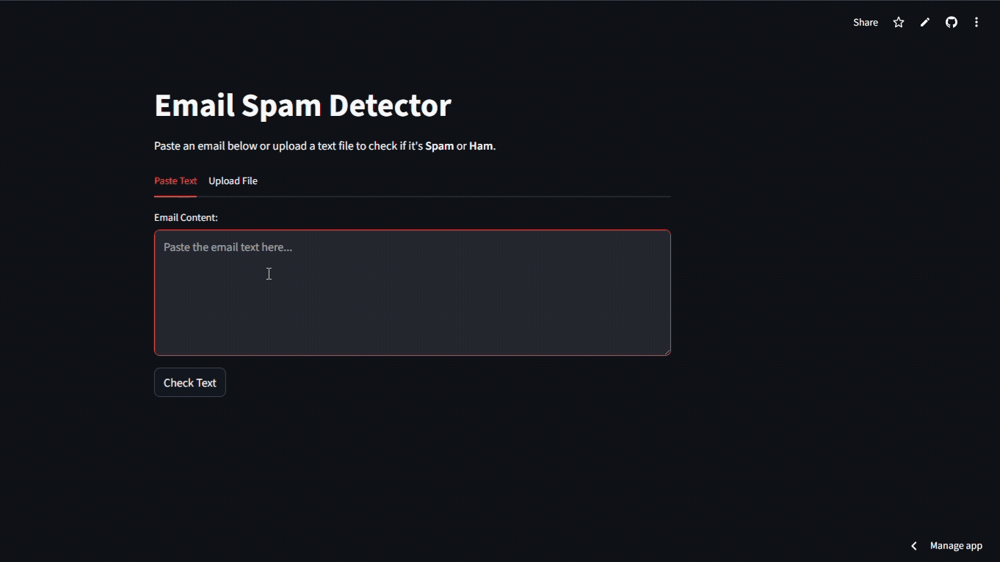

Bayesian Sentinel
A probabilistic text classification engine distinguishing between legitimate data (Ham) and unsolicited noise (Spam). Features a custom Naive Bayes implementation with model persistence. Implemented FROM SCRATCH, without any 3rd party libraries.
Launch System ->Poem Generator
An AI-driven interface that constructs 15-line poems based on user prompts. Utilizing the SheCodes AI API and a custom typewriter plugin to simulate organic text generation.
<- Launch System

Global Weather
Real-time atmospheric data visualization. Fetches live conditions and 5-day forecasts via Axios and the SheCodes Weather API, presenting complex data in a clean UI.
Launch System ->World Chronometer
A temporal synchronization tool built with Moment.js. Accurately tracks and displays time across multiple timezones based on user input.
<- Launch System